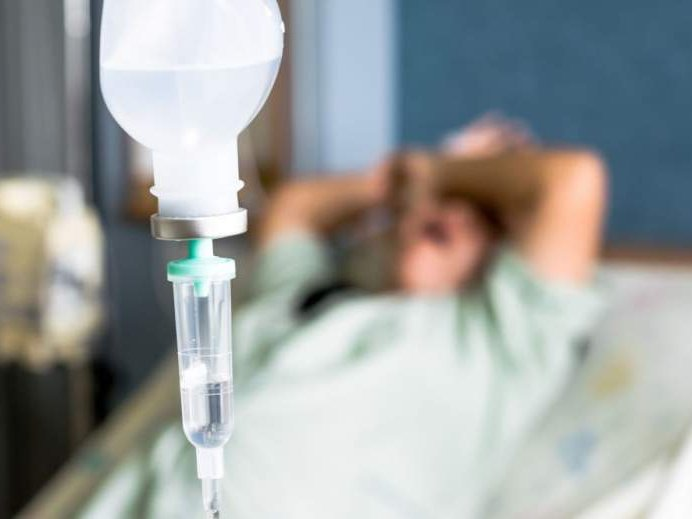

Капельница от запоя на дому
Неотложная помощь при систематическом потреблении алкоголя (более 3-х суток)
Работаем в Одессе, Киеве, Львове, Харькове, Днепре, Запорожье

Работаем в Одессе, Киеве, Львове, Харькове, Днепре, Запорожье
Запой это состояние при котором пациент злоупотребляет алкоголем более двух суток и характеризуется такими важными симптомами как:
Запой это патологическое состояние при котором пациент не всегда в силе остановиться сам без медицинского вмешательства характеризующийся патологическим желанием выпить и не редки случаи когда запой приводит к развитию тяжелых болезней от банальной передозировки до тяжелой печеночной комы.
Выйти из запоя можно самостоятельно или с помощью медицинской помощи. Вот несколько советов , которые могут помочь:
Выведение из запоя в стационарных условиях является наиболее безопасным и эффективным способом. В стационаре пациент находится под постоянным наблюдением медицинского персонала, что позволяет избежать осложнений, плюсом является то что наркологические стационары всегда являются закрытыми что позволяет исключить какое-либо употребление алкоголя. Основные этапы Вывода из запоя в стационаре являются:
Вывод из запоя на дому возможен, но он требует большого опыта врача нарколога обращаясь к нам вы можете быть уверены в полной безопасности пациента наши выездные доктора имеют опыт работы в реанимационных отделениях либо подстанциях скорой помощи.
Выйти из запоя самостоятельно можно, но это требует осторожности и серьезного подхода. Вот подробный план действий:
Капельница при алкогольной интоксикации обычно используется для детоксикации организма и включает в себя введение различных препаратов внутривенно. Обычно такая процедура проводится в медицинских учреждениях под наблюдением специалистов. В состав капельницы могут входить следующие компоненты:
Цена лечения вывода из запоя может значительно варьироваться в зависимости от ряда факторов, таких как:
Анонимно

"Никакими усилиями самостоятельно я не смогла преодолеть запой, и наступала ломка, сопровождаемая повышенным давлением и пульсом. Тогда я решила обратиться за помощью в клинику. Врачи оказали мне неоценимую поддержку! Уже прошел месяц, и я не только не употребляю алкоголь, но даже не испытываю к нему желания!"
Анонимно
"Могу с уверенностью порекомендовать данный центр для тех, кто ищет помощь при выводе из запоя. Я неоднократно обращался к ним и могу сказать, что цена соответствует качеству услуг. После проведения капельницы в клинике, вся тяга к алкоголю проходит, и я чувствую себя гораздо лучше. Это действительно эффективный метод, и я благодарен клинике за их профессионализм и заботу!"
Анонимно
"Неоднократно я пытался бросить алкоголь самостоятельно, но каждый раз уговаривал себя продолжать. Я сначала ограничивался одной бутылкой в день, потом двумя, и в итоге вновь попадал в запой. Но в итоге, я смог прекратить употребление алкоголя только после того, как обратился в центр Амбрелла и заказал у них услугу вывода из запоя. Уже не пью 3 месяца и удалось полностью восстановиться. Благодарю врача который меня вел - Алексея Валерьевича"
Анонимно
"Здравствуйте! Я хотел бы выразить свою искреннюю благодарность клинике за быстрое и профессиональное освобождение моего мужа из запоя! Ранее у меня уже не было никаких надежд на его выздоровление. Однако, благодаря вашим перспективным методам лечения, мы теперь идем к полному отказу от алкоголя. Вы дали нам новую надежду и оказали неоценимую помощь! Спасибо вам за все!"
Анонимно
"Я долгое время страдал от запоев и не мог справиться с этой проблемой. Однако, когда я обратился в этот центр, они быстро помогли мне вернуться на ноги, и самое главное - предоставили мне возможность не возвращаться к запоям. Уже почти полгода я не испытываю запоев! Это для меня настоящее чудо, я никогда не думал, что смогу так преодолеть свои проблемы. Большое спасибо центру Амбрелла!"
Анонимно
"Благодарю ваш центр Амбрелла за оперативное и высококачественное лечение! Женский алкоголизм - это настоящее горе, с которым невозможно справиться в одиночку. Я уже потеряла надежду, но благодаря вашей помощи, она вернулась ко мне! Отдельная благодарность врачу Станиславу Вячеславовичу, а также благодарность Богу за то, что он послал мне такое чудо как ваша центр! Спасибо вам всем!"
Анонимно
"Я очень благодарен за то, что вы помогли мне разобраться с моей проблемой алкоголизма и найти ее решение. Давно осознавал, что без помощи профессионалов я не справлюсь, и я не ошибся, выбрав ваш центр Амбрелла. Здесь действительно предоставляется профессиональная помощь, которая оказалась для меня реальным спасением. Огромное спасибо за вашу поддержку и заботу!"
Анонимно
"Хочу выразить благодарность врачу Владиславу Алексеевичу за то, что вы избавили меня от этого ужаса. Я уже был в отчаянии, перепробовал множество клиник и центров, но только здесь я наконец получил настоящую помощь! Алкоголь полностью разрушил меня, и если бы не ваша помощь, я, возможно, уже не был бы жив. С вами я смог вернуть себе жизнь и буду благодарен вам всегда!"
Отзыв можно оставить после оказания вам услуги
Приезд в течении 60 минут от момента поступления заявки
В таких городах как Одесса, Киев, Львов, Харьков, Днепр
Мы оказываем профессиональную доказательную медицинскую помощь. Гарантией является наше имя.
Номер телефона:
+380 (50) 021 69 57
Адрес главного офиса: г. Одесса Армейская 18/1 Офис вашего города нужно уточнить
Telegram: t.me/umbrellaplus
График работы: Круглосуточно
Запойное состояние представляет серьезную угрозу для здоровья и требует немедленного медицинского вмешательства. В нашем центре в Одессе мы предлагаем услугу капельницы от запоя на дому, что позволяет получить необходимую помощь в комфортных условиях вашего дома.
Наши специалисты приедут к вам домой и проведут все необходимые процедуры для стабилизации состояния пациента. Преимущества данного подхода:
Процедура вывода из запоя включает введение специальных препаратов через капельницу, что помогает очистить организм от токсинов, восстановить водно-солевой баланс и улучшить общее самочувствие. Наши врачи используют только проверенные и безопасные методы, что гарантирует высокую эффективность лечения.
Наш центр в Одессе предоставляет качественные медицинские услуги на дому. Мы обладаем:
Для заказа услуги капельницы от запоя на дому в Одессе, достаточно позвонить нам или оставить заявку на сайте. Наши специалисты свяжутся с вами для уточнения всех деталей и оперативного выезда по указанному адресу. Мы готовы предоставить помощь в любое время, чтобы вы могли быстро и безопасно вернуться к нормальной жизни.
Не откладывайте заботу о своем здоровье на потом. Обратитесь к нам за профессиональной помощью и начните путь к выздоровлению уже сегодня!